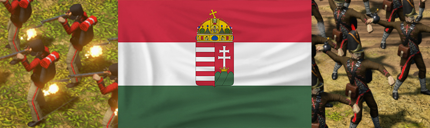
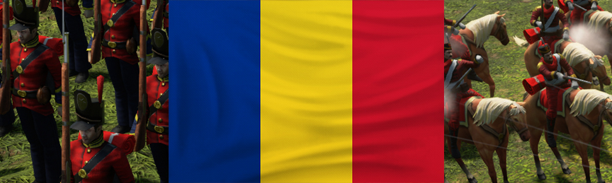
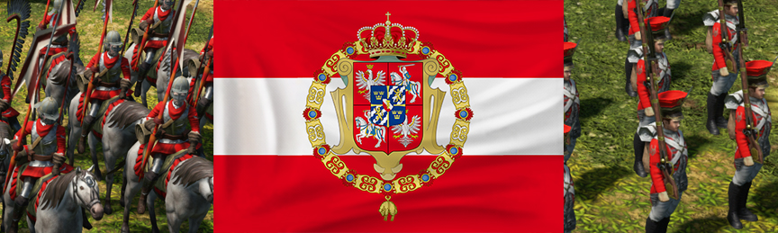

Eastern Europe Expansion
This modification aims to add three distinct factions to the roster of Age of Empires III: Definitive Edition. It is a passion project of mine- As a long time fan of the Age of Empires series, I have always wanted to see a version of my Nationality represented in the game. The flagship Faction of this mod is absolutely the Hungarians, but careful effort has gone into making every other civ just a fun, feature rich, and interesting as Hungary.
Link to the Dev Diary of the modification.
Goals
- Unique units & Buildings
-
Unique units for each faction.
- Unique abilities
-
Unique strengths and weaknesses for each faction.
- Fun
-
Fun technologies for the player’s disposal that still adhere to balance and theme of the game.
- Quality Standards
-
Maintain the standards of quality and artstyle that the developers have set.
Contents
Civilization Roster
- Hungary
-
Based on 1848-1850 Hungary, as it fought for independence and then transitioned back under Austrian Rule.
 - Romania
-
Based on 1800-1900 Romania.
 - Polish-Lithuanian Commonwealth
-
Based on 1600-1791 Poland/Lithuania.

Hungary
This Civilization is the primary inspiration for, and is most significant component of the mod. This Civilization creates many great early-game opportunities to shine, mirroring the early success of the Hungarian revolution for independence in 1848.
Romania
The Romanians gained a new unique ability that makes them especially difficult to raid, with Town Centers able to chip away at nearby enemies alongside its normal attacks. This Civ also has great economic bonuses, with extra gather rates and an increasing number of homestead wagons per age-up.
The Commonwealth
The Commonwealth has many opportunities for territorial expansion. They receive Outpost and Military wagons with shipments. There is also a great element of multi-culturalism, as each of the age-up representatives are nominated/crowned Kings of the Commonwealth, with nationalities like the French, Russian, and other nationalities lending their buffs to the Civ.